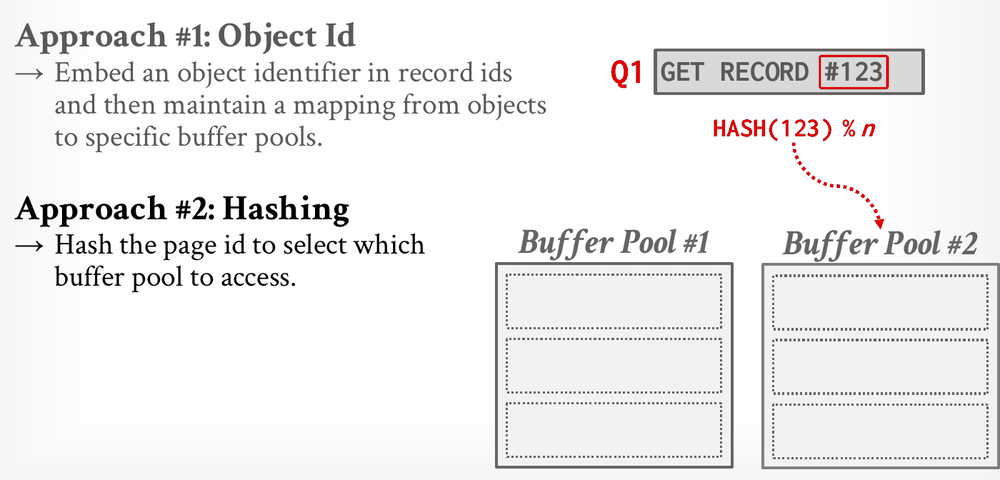

Database Internals in Go · Unit 2 · Lesson 9
P1 Stretch: Leaderboard Benchmark
Explain what CMU's Project 1 leaderboard measures, run and read the Go benchmarks that stand in for it, and test the writeup's speed-up ideas as measured experiments.
This lesson is optional. Your buffer pool is complete once the full test suite passes, and CMU's writeup says the same about its leaderboard: "you can get a perfect score in the project after finishing all previous tasks." The leaderboard asks a different question, how fast your buffer pool is under a mixed workload, and answering it well means measuring before changing anything. The tools you learn here, go test -bench and the profiler, come back in the stretch lesson of every later project.
Lecture #04 lists ideas that keep a query's scan from pushing useful pages out of the buffer pool. Which of these is one of them?
Lecture #06 sorts workloads into OLTP, OLAP and HTAP. A goroutine that repeatedly picks one page, reads it, updates a few bytes and moves on looks like which kind of work?
DiskScheduler.Schedule takes a slice of DiskRequests, and each request carries its own callback. What does that design leave room for?
What CMU's leaderboard measures
CMU runs a benchmark program, bpm-bench, against each submission's buffer pool, built with the release profile. The writeup describes two kinds of threads, eight of each:
- Scan threads read pages sequentially, each over its own range.
- Get threads pick a page at random from a Zipfian distribution, a skewed distribution in which a few pages get most of the accesses, and update it.
Every access goes through ReadPage or WritePage with an access type: scans pass AccessType::Scan and gets pass AccessType::Lookup. The pool is much smaller than the data, so pages are evicted all the time, and the threads check each page's contents, so a fast but wrong buffer pool fails.
The benchmark runs three times, 30 seconds each, on BusTub's in-memory disk. The first two runs use different buffer pool and replacer settings. The third adds simulated latency: 1 ms for each random read or write, and 0.1 ms for sequential or local ones. The score combines the queries per second (QPS) of each kind of thread in each run:
scan_qps_large / 1000 + get_qps_large / 1000 + scan_qps_small / 1000 + get_qps_small / 1000 + scan_qps_1ms + get_qps_1msThe latency run's QPS count in full, while the other two are divided by 1000. With a millisecond per random I/O, every avoided disk access is worth a lot there, so a better hit rate and overlapped I/O matter as much as raw speed in memory.
The writeup's leaderboard policy sets the limits. An optimization must stay correct for every input, including inputs the benchmark never produces; TAs may review the code and, for example, change the buffer pool size to check. Detecting that the benchmark is running is not allowed, and neither is #ifdef NDEBUG trickery. Submissions with obvious correctness issues get no bonus. Before you start, the writeup recommends you "checkpoint your code before optimizing for leaderboard tests, so that if these optimizations cause problems in future projects, you can always revert them." Every later project in this course runs on your buffer pool.
The Go stand-ins
The module has two benchmarks, found with grep -rn 'func Benchmark' intro_to_db:
| Benchmark | What one operation is | Compared with CMU's |
|---|---|---|
BenchmarkBufferPoolManagerScanGet (buffer_pool_manager_extra_test.go) | one page access by one of 16 goroutines: 8 scanners reading their range with AccessScan and 8 getters updating Zipf-chosen pages with AccessLookup, each checking the page it sees | the same shape, smaller: 64 frames, 1024 pages, no simulated latency (the Go MemoryManager leaves BusTub's latency simulator out), a fixed number of operations instead of 30 seconds, and one number for the whole mix instead of separate scan and get QPS. Go's rand.Zipf requires an exponent above 1, so the skew is not the same as BusTub's. |
BenchmarkArcRecordAccess (arc_replacer_performance_test.go) | one RecordAccess hit on a replacer with 256K frames, on one goroutine | the workload of BusTub's RecordAccessPerformanceTest, which you already passed in P1.1 |
TestBufferPoolManagerConcurrencyStress runs the ScanGet workload as a correctness test, with a flusher added and only 16 frames, so after any change, the full test suite tells you whether you broke something.
Running the benchmarks and reading ns/op
From go_db_internals/intro_to_db:
go test -bench . -run '^$' ./bufferpool/-bench . runs every benchmark whose name matches the regex ., so all of them; -bench ScanGet would pick one. -run '^$' matches no test name, so none of the 62 tests runs first. One run of a correct implementation on a 4-core Linux machine printed:
goos: linux
goarch: amd64
pkg: intro_to_db/bufferpool
cpu: Intel(R) Xeon(R) Processor @ 2.10GHz
BenchmarkArcRecordAccess-4 8073704 159.5 ns/op
BenchmarkBufferPoolManagerScanGet-4 580003 2055 ns/op
PASS
ok intro_to_db/bufferpool 3.172sEach line has three columns. The suffix -4 is GOMAXPROCS, the number of threads that ran Go code at once. The middle number is b.N, how many operations the final round ran: the testing package raises b.N until a round lasts about one second, the default -benchtime. The last column is the wall-clock time of that round divided by b.N.
For BenchmarkArcRecordAccess, one goroutine does the work, so 159.5 ns/op is the average cost of one call. For BenchmarkBufferPoolManagerScanGet it means something else. The benchmark splits b.N among 16 goroutines that run at the same time, so 2055 ns/op is the inverse of throughput: 10⁹ / 2055 ≈ 487,000 page accesses per second for the whole pool. It is not the latency of one access. With 16 goroutines busy throughout, an average access took about 16 × 2055 ns, roughly 33 µs, much of it spent waiting for latches. To compare with CMU's numbers, think in QPS: lower ns/op means higher QPS.
Flags that change the measurement:
-benchtime=5smakes each round last about 5 seconds;-benchtime=100000xruns exactly 100,000 operations.-count=10repeats each benchmark 10 times, so you see the spread instead of one sample.-cpu 1,2,4runs each benchmark withGOMAXPROCSset to 1, 2 and 4, which shows whether more cores help or only add contention.-cpuprofile cpu.outand-mutexprofile mutex.outrecord where CPU time goes and where goroutines wait on mutexes. Open them withgo tool pprof cpu.out.
Put them before the package, after -run:
go test -bench ScanGet -run '^$' -benchtime=5s -count=10 ./bufferpool/
go test -bench ScanGet -run '^$' -mutexprofile mutex.out ./bufferpool/Measurement pitfalls
- Never benchmark with
-race. It instruments every memory access and synchronization operation; the Go documentation puts the cost at 2 to 20 times the execution time for a typical program. On the machine above,-raceturned 159.5 ns/op into 1,562 ns/op and 2,055 ns/op into 41,725 ns/op, and it doesn't slow every part of the code equally, so it can change which version looks faster. Test with-race; measure without it. - Expect noise. Three 2-second runs of
BenchmarkArcRecordAccesson the same idle machine gave 132.1, 156.9 and 153.4 ns/op, a spread of almost 20%. A change that moves one run by 10% has shown nothing. Run-count=10before and after, compare the distributions (thebenchstattool fromgolang.org/x/perfdoes this), and keep the machine quiet: plugged in, other programs closed. - Give the benchmark enough operations. With
-benchtime=100x, ScanGet reported 5,039 ns/op instead of about 2,050: each goroutine ran 6 accesses, so starting goroutines and filling the pool dominated. Let the benchmark chooseb.N, or give it seconds. - The Go benchmark's disk is a memory copy, so a cache miss costs microseconds rather than CMU's millisecond. Improvements to the hit rate barely show here, while latching costs show strongly, so a flat result says little about a hit-rate idea.
- A faster buffer pool that fails a test is a broken one. After every experiment, run
go test -race -count=1 ./...again.
Ideas to try
The writeup recommends three directions. Each one below is an experiment: record a baseline, make one change, measure again, and keep the change only if it is faster and every test still passes.
The first is a better replacer. The get workload is skewed, so the writeup suggests taking the access type into account "so as to reduce page miss". This is the lecture's sequential flooding problem: every scan access looks like a fresh use, and in ARC a second scan access promotes a page into the MFU list, where it competes with the hot pages that the getters need. Lecture #04's localization and priority hints are the same idea, the DBMS telling the buffer pool how a page is being used.
#04 Memory Management, "Advanced eviction algorithms" (43:25) and "Buffer pool optimizations" (1:02:04), slides 20–21 and 30–31: sequential flooding, then localization and priority hints.
The second is parallel I/O. One worker that runs requests one at a time leaves a modern SSD idle much of the time. The writeup lets the scheduler issue several requests at once, provided that requests for the same page end up "as if they are processed in order", with read-after-write consistency within a thread. Prefetching belongs here too: Schedule takes a slice so that one call can ask for several pages ahead of a scan.
#05 Database Storage II, "Pre-fetching techniques" (7:38): prefetching pages for sequential and index scans, based on the query plan.
The third is less latch contention. The simple design from P1.5 holds bpmLatch during disk I/O, so every fetch waits behind every read. To get real parallelism, the writeup says the buffer pool must "handle multiple ReadPage and WritePage requests and evicting multiple pages at the same time", and that you "might need to bring in a conditional variable in your buffer pool manager to manage free pages". Lecture #04 offers another route: split the pool into several smaller pools, each with its own latch and replacer.

#05 Database Storage II, "Multiple buffer pool implementation" (6:02): per-instance, per-database and per-page-type pools, and routing a request by object ID or by hashing the page ID.
Check your understanding
BenchmarkBufferPoolManagerScanGet reports 2055 ns/op. What does that number tell you?
With -race, the same benchmark reports 41,725 ns/op instead of 2,055. What should you conclude?
Before a change, three runs of BenchmarkArcRecordAccess gave 132.1, 156.9 and 153.4 ns/op. After the change, one run gives 140 ns/op. What can you say?
Why does the benchmark command include -run '^$'?
You change the replacer so that scan accesses never promote a page into MFU. The test suite passes, but BenchmarkBufferPoolManagerScanGet barely moves. Which explanation fits best?
Experiments
None of these has a test command of its own; the benchmark and the full suite are the measure. The hints describe directions, not code.
-
What to think about
Every later project builds on this code. If an experiment goes wrong, how will you get back to a version that passes everything? And what will you compare each experiment against?
The approach
Commit on your branch with a message such as "P1 complete". Run the benchmarks with
-count=10and redirect the output to a file, for examplebaseline.txt. Note the machine's state (plugged in, nothing else running), since later runs must be made the same way.The crux, in words
A baseline is a distribution, not a number. Keep all ten samples, so that a later comparison can tell a real change from noise.
-
What to think about
Is the time spent doing work (copying pages, list operations in the replacer) or waiting (for
bpmLatch, for frame latches, for the disk worker)? The answer decides which experiment is worth doing.The approach
Run the benchmark once with
-cpuprofileand once with-mutexprofile, then open each file withgo tool pprofand use itstopandlistcommands. In the mutex profile, look for whichLockcall sites account for most of the waiting.The crux, in words
If most waiting is on
bpmLatchwhile a fetch reads from disk, the latch-contention experiment is the one to try first; if the replacer's methods dominate the CPU profile, the replacer is. -
What to think about
In ARC, which event turns a page into an MFU page, and should a scan be able to cause it? Once a scan has moved past a page, how likely is it to need that page again soon? Remember that every ARC test passes
AccessUnknownand expects the writeup's rules exactly.The approach
Change only what happens for
AccessScan, and keep every other access type on the writeup's rules. Two directions to compare: a scan hit that leaves the page where it is instead of promoting it, and scan pages entering where they will be chosen for eviction early. Measure with the benchmark, and then with a disk that has latency (next experiment), because the effect lives in the hit rate.The crux, in words
The ARC tests use
AccessUnknown, so an access-type rule that changes behavior only for scans keeps them passing; if an ARC test fails, the rule leaked into other access types. -
What to think about
The writeup's third run charges 1 ms for a random access and 0.1 ms for a sequential or local one. Where in the module could you add a delay without changing any shipped file?
The approach
In a new
_test.gofile of your own, wrap adisk.MemoryManagerin a type that implementsdisk.Managerand sleeps before each read and write: briefly when the page is close to one of the last few pages accessed, longer otherwise. Then write a benchmark that builds the buffer pool on top of your wrapper and reuses the package's workload helpers, asBenchmarkBufferPoolManagerScanGetdoes. Keep the operation count small; every miss now costs real time.The crux, in words
With latency, a buffer pool that holds
bpmLatchduring I/O makes every fetch wait while one goroutine waits for the disk, so this benchmark shows the cost of the simple design and the gain from the next two experiments. -
What to think about
If a goroutine releases
bpmLatchwhile it reads page X from disk, what does a second goroutine see when it asks for X at the same moment? Recall the writeup's "Data race ☠️" story about two copies of one page. If you split the pool instead, how does a request find its partition, and what happens when the pool has only one or two frames, as some tests use?The approach
For I/O outside the latch: give a frame an "I/O in progress" state that is set and cleared under
bpmLatch, map the page before the I/O starts so a second requester finds it, and make that requester wait (a condition variable, as the writeup suggests) until the read finishes instead of loading a second copy. Pin the frame first so it can't be chosen as a victim mid-read. For partitions: route each page ID to a fixed partition by hashing it, give each partition its own latch, frames, free list and replacer, and make sure every public method,GetPinCountincluded, goes to the right partition.The crux, in words
Whatever you change, a page must never be in two frames at once, and a frame with a pin count above 0 must never be evictable. Run the concurrency tests many times with
-race; races in this kind of code show up rarely. -
What to think about
Two requests for different pages can run in either order. Two requests for the same page, say a write and then a read, cannot. How can several workers share the queue without ever reordering one page's requests?
The approach
Use several worker goroutines, and send all requests for one page to the same worker, for example by choosing the worker from the page ID. Each worker still processes its own requests in order, so per-page order holds.
Shutdownmust still drain every queue and wait for every worker. This only pays off together with a buffer pool that issues I/O from several goroutines at once (the previous experiment).The crux, in words
Partitioning the work by page ID turns "keep one page's requests in order" into "keep one queue in order", which one worker already does.
TestDiskSchedulerBatchPreservesOrderandTestDiskSchedulerShutdownDrainsQueuetell you if you broke it.
From go_db_internals/intro_to_db, first make sure nothing broke, then measure:
go test -race -count=1 ./...
go test -bench . -run '^$' -benchtime=2s -count=10 ./bufferpool/The first command must print ok for all three packages, every time you run it. The second gives ten samples per benchmark to compare with your baseline. Keep a change only if the samples are clearly lower than the baseline's; otherwise revert to your commit. There is no score to reach here, so the goal is to understand where the time goes.
Primary sources: the Project #1 writeup, "Leaderboard Task (Optional)", "Recommended Optimizations" and "Leaderboard Policy", and Task #3 (Implementation); CMU 15-445/645 Fall 2025 Lecture #04 slides 20–21, 30–31 and 39–41; BusTub tools/bpm_bench/bpm_bench.cpp and src/include/buffer/buffer_pool_manager.h at commit d49b823; this course's bufferpool/buffer_pool_manager_extra_test.go and arc_replacer_performance_test.go; the Go documentation for the testing package and the race detector.